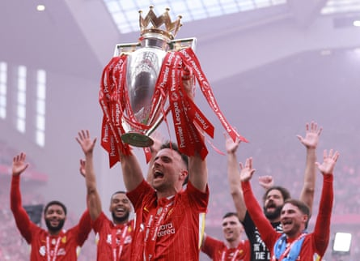

Cristiano Ronaldo led the tributes from across the football world to Diogo Jota after the Liverpool and Portugal forward was killed in a car accident in Spain. Jota’s brother, André, also died in the crash in the province of Zamora.
Jota was 28, a father of three young children and had married his long-term partner, Rute Cardoso, less than a fortnight ago. Ronaldo, who played with Jota at international level, posted a message on social media in Portuguese which translated said: “Doesn’t make any sense. Just now we were together in the national team, just now you were married. To your family, to your wife, your children, I send my condolences and wish them all the strength in the world. I know you will always be with them. R.I.P Diogo and André. We will all miss you.”
Wolves, Jota’s previous club and his first in England, whom he joined on loan in 2017 before making the move from Atlético Madrid permanent the following summer, said they were heartbroken. Jota won promotion to the Premier League in his first season and made 131 appearances for Wolves before joining Liverpool in 2020, winning the Premier League last season.
Wolves said: “Diogo was adored by our fans, loved by his teammates and cherished by everyone who worked with him during his time at Wolves. The memories he created will never be forgotten. Our hearts go out to the family, friends and loved ones of Diogo and his brother, André. You will be truly missed, and always remembered.”
The former Liverpool defender Jamie Carragher said: “Devastating news about Diogo Jota & his brother André this morning. Thoughts are with everyone of their family & friends, especially his wife Rute & their three lovely kids.”
Rúben Neves, Jota’s former Wolves and Portugal teammate who plays for Al-Hilal in Saudi Arabia, posted a poignant message on social media: “They say we only lose people when we forget them. I will never forget you!”
Porto, the Portuguese club whom Jota joined on loan from Atlético in 2016, said the club was in mourning. Porto said: “It is with shock and deep regret that we send our heartfelt condolences to the family and friends of Diogo Jota and his brother André Silva, who was also our athlete in the youth ranks.” Porto’s rivals, Sporting, said “the world of football is poorer”.
The Premier League also paid tribute to Jota: “Everyone at the Premier League is shocked and devastated to learn of the tragic passing of Diogo Jota and his brother André. Our sincerest condolences go to Diogo’s family, friends, Liverpool FC, and all their supporters at this heartbreaking time. Football has lost a champion who will be forever missed. We will continue to support our friends and colleagues at the club.”
Diogo Jota lifts the Premier League trophy in May.Photograph: Phil Noble/Reuters
André was also a professional footballer and his club, Penafiel, of the Portuguese second tier, expressed their “sorrow and dismay” after the death of their player and his brother. Penafiel said: “At this very difficult moment, Penafiel football club sends its most sincere condolences to the family, friends and all those who shared with André and Diogo moments of life and passion for the sport ... May you rest in peace.”
The LA Lakers basketball player and Liverpool minority owner LeBron James wrote: “My prayers goes out to his loved ones during this time! May you all be guided and protected! YNWA [You’ll Never Walk Alone] JOTA!!”
Keir Starmer, the UK prime minister, said: “There are millions of Liverpool fans, but also football fans, non-fans, who will also be shocked by this. It is devastating, and it is really important we bear in mind just how difficult a period this will be for his friends, for his family.”